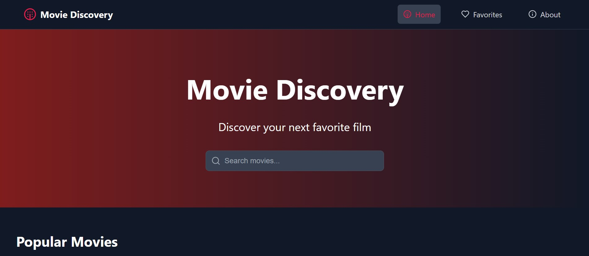
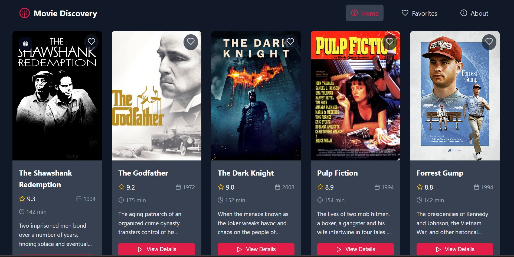

Movie Discovery – This name clearly reflects the site's core purpose: helping users discover, explore, and organize information about movies. It's straightforward, easy to remember, and relevant to the site's function.
Optional domain availability: moviediscovery.net or discovermovieshub.com
Movie Discovery is a personalized platform where users can browse a curated database of popular and acclaimed films, search by various criteria, and build a personal list of favorite movies. It provides comprehensive film data, a responsive layout for all devices, and interactive elements to enhance the browsing experience.
Sketch of the homepage for mobile users:
Sketch of the homepage layout for desktop users:
 